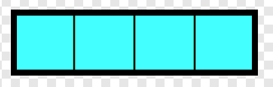
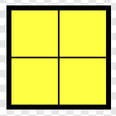
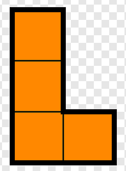
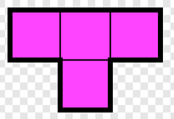

La figura barra recta o I en Tetris está formada por cuatro bloques alineados. Es una de las piezas
más valiosas, ya que al colocarla verticalmente puede eliminar hasta cuatro líneas de una sola vez, logrando
un “Tetris”. Su forma simple y alargada la hace ideal para despejar grandes espacios en el tablero.

La figura cubo o O en Tetris está compuesta por cuatro bloques que forman un cuadrado de 2x2. Es la
pieza más estable del juego, ya que no cambia su forma al girar. Aunque ocupa más espacio que otras, resulta
ideal para rellenar huecos y mantener una base sólida en el tablero.

La figura L en Tetris está formada por cuatro bloques que crean una forma de ángulo recto, parecida
a la letra “L”. Es muy versátil, ya que puede encajar fácilmente en huecos laterales o completar líneas al
girarla en distintas posiciones. Su forma permite adaptarse a estructuras irregulares y es clave para
mantener el tablero ordenado.

La figura T en Tetris está compuesta por cuatro bloques que forman una barra con uno adicional en el
centro, creando la forma de una “T”. Es una de las piezas más estratégicas, ya que puede encajar en espacios
difíciles y permite realizar maniobras avanzadas como el “T-Spin” para eliminar varias líneas a la vez.